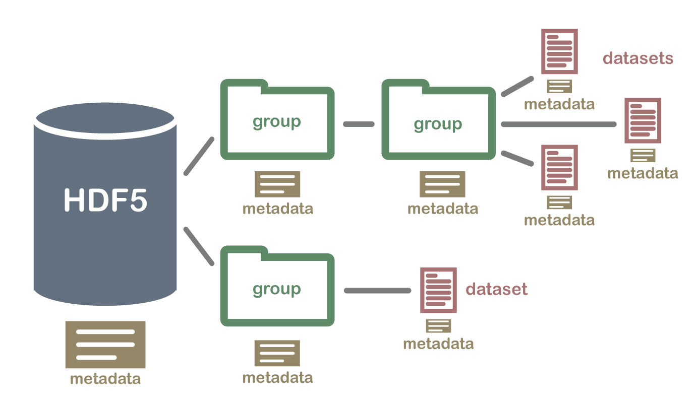

# Vorbereitung: Module aus vorherigem Kapitel erneut laden
import pandas as pd9 Wissenschaftliche Dateiformate
Wissenschaftliche Datensätze können extrem groß sein. Beispielsweise hat das Kernforschungszentrum CERN im November 2018 15,8 Petabyte Daten aufgezeichnet (Key Facts and Figures - CERN Data Centre). Für den Austausch großer Datenmengen wurden Datenformate wie das Hierarchical Data Format (HDF) und Network Common Data Format (netCDF) entwickelt. Diese erlauben es unter anderem, Datensätze direkt vom Massenspeicher des Computers auszulesen, sodass eine mögliche Begrenzung durch den Arbeitsspeicher vermieden wird.
Im Folgenden werden knapp die Grundfunktionen für das Arbeiten mit HDF5- und netCDF4-Dateien vorgestellt. Detailliertere Informationen finden Sie in der jeweiligen Dokumentation.
9.1 HDF5
HDF5 bedeutet Hierarchical Data Format Version 5. HDF organisiert Daten in einer Ordnerstruktur, die mit der Ordnerstruktur eines Computers vergleichbar ist, und enthält beschreibende Metadaten, weshalb HDF als selbstbeschreibend gilt. Die HDF-Verzeichnisstruktur wird mit bestimmten Begriffen beschrieben.
Gruppen oder
groupsbezeichnen die Verzeichnisse (Unterordner) innerhalb der HDF-Datei.groupskönnen weitere Gruppen oderdatasetsenthalten.Dateien oder
datasetsentsprechen einzelnen Dateien.

An illustration of a HDF…and associated metadata von U.S National Science Foundation’s National Ecological Observatory Network (NEON) ist abrufbar unter https://www.neonscience.org/resources/learning-hub/tutorials/about-hdf5.
In Python können die Pakete PyTables, das von Pandas verwendet wird, und h5py mit HDF5 umgehen. Das Einlesen von HDF5-Dateien funktioniert ähnlich wie das Einlesen von Dateien in der Pythonbasis: Der Zugriff auf die Datei erfolgt mit einem Dateiobjekt, über das verschiedene Methoden zum Lesen und Schreiben bereitgestellt werden. Abschließend wird das Dateiobjekt wieder geschlossen.
Die Integration des Pakets PyTables in Pandas ist auf die Verwendung von Pandas-Objekten ausgelegt. Es wird eine spezifische Dateistruktur genutzt und erwartet. Anders aufgebaute HDF5-Dateien können nicht eingelesen werden. Deshalb wird das Paket hier nur kurz vorgestellt. (Thema auf stackoverflow, Antwort von Kevin S unter CC-BY-SA 3.0)
Hinweis 9.1: Datensatz
In diesem Abschnitt wird ein Teil des Datensatzes IceBridge ATM L1B Elevation and Return Strength, Version 2 genutzt (kostenlose Registrierung bei NASA Earth erforderlich). Das Handbuch ist hier verfügbar. Der Datensatz enthält flugzeugbasierte Lasermessungen für die Höhe des Eisschildes in der Arktis und Antarktis mittels des NASA Airborne Topographic Mapper (ATM). ATM hat eine Abtastrate von 3 bis 5 kHz. Jede Datei enthält die Daten von einigen Minuten Flugdauer. Das geografische Referenzsystem ist das World Geodetic System 1984 (WGS 84)
Die Dateien sind nach dem Schema ILATM1B_YYYYMMDD_HHMMSS.ATM4BT4.h5 benannt:
Datensatz-ID_
Jahr, Monat, Tag der Messung_
Zeitpunkt am Beginn der Messung in Stunden, Minuten, Sekunden_
Instrumenten-ID (fünfstellig) und Messwinkel (T2 = 15 Grad, T3 = 23 Grad, T4 = 30 Grad).
xxx Dateityp (.h5 = HDF5, h5.xml = zusätzliche Metadatendatei)
Studinger, M. 2013, updated 2020. IceBridge ATM L1B Elevation and Return Strength, Version 2. [Indicate subset used]. Boulder, Colorado USA. NASA National Snow and Ice Data Center Distributed Active Archive Center. https://doi.org/10.5067/19SIM5TXKPGT. [05.12.2024]
PyTables
Das Paket PyTables wird mit dem Befehl pip install tables installiert. Die Funktionen des Pakets sind in Pandas integriert. Der Zugriff auf HDF-Dateien wird in Pandas über ein HDFStore-Objekt bereitgestellt. Hierüber können HDF-Dateien gelesen und geschrieben werden. Das HDFStore-Objekt entspricht dem Wurzelverzeichnis der strukturierten Datei. Die Funktion pd.HDFStore(path, mode) nimmt als Argumente den Dateipfad path und den Zugriffsmodus mode entgegen.
| Zugriffsmodus | Beschreibung |
|---|---|
| ‘a’ | Standardmodus append: öffnet die Datei im Lese- und Schreibmodus. Falls die Datei nicht vorhanden ist, wird diese erstellt. |
| ‘w’ | Schreibzugriff, Erstellen einer neuer Datei, Überschreiben einer bestehenden, gleichnamigen Datei |
| ‘r’ | Lesezugriff |
| ‘r+’ | Lese- und Schreibzugriff wie ‘a’, Datei muss aber existieren. |
Über das HDFStore-Objekt kann der Inhalt der Datei ausgelesen werden, sofern das Format kompatibel ist.
Die Methode
hdf.info()gibt Informationen zum Dateiobjekt aus.Die Methode
hdf.keys(include = 'pandas')gibt standardmäßig die Schlüssel der Pandas-Objekte im Wurzelverzeichnis zurück. Mit dem Argumenthdf.keys(include = 'native')sollten auch native HDF5-Objekte ausgegeben werden können, sofern die HDF5-Datei kompatibel ist.Der Zugriff auf ausgewählte Schlüssel erfolgt mit der Methode
hdf.get('key')oder durchhdf['key'].Mit der Methode
hdf.close()wird das HDFStore-Objekt wieder geschlossen.
Beispiel 9.1: inkompatible HDF5-Datei
# Datei öffnen
dateipfad = "01-daten/ILATM1B_20191120_041200.ATM6AT6.h5"
hdf = pd.HDFStore(dateipfad, mode = 'r')
print(hdf.info(), "\n")
# parameter include: str, default ‘pandas’. When ‘pandas’ return pandas objects. When ‘native’ return native HDF5 Table objects.
print(hdf.keys(include = 'native'), "\n")
print(hdf.keys(include = 'pandas'), "\n")
print(hdf.groups(), "\n")
# Test hdf.get()
try:
elevation = hdf.get('elevation')
print(type(elevation))
except TypeError as error:
print("Die Eingabe führt zu der Fehlermeldung:\n", error)
else:
elevation = hdf.get('elevation')
print(type(elevation))
# Test pd.read_hdf()
try:
elevation = pd.read_hdf(path_or_buf = hdf, key = 'elevation')
print(type(elevation))
except TypeError as error:
print("Die Eingabe führt zu der Fehlermeldung:\n", error)
else:
elevation = pd.read_hdf(path_or_buf = hdf, key = 'elevation')
print(type(elevation))
# HDFStore-Objekt schließen
hdf.close()<class 'pandas.HDFStore'>
File path: 01-daten/ILATM1B_20191120_041200.ATM6AT6.h5
Empty
[]
[]
[]
Die Eingabe führt zu der Fehlermeldung:
cannot create a storer if the object is not existing nor a value are passed
Die Eingabe führt zu der Fehlermeldung:
cannot create a storer if the object is not existing nor a value are passedUm die Funktionen zu demonstrieren, wird mit eine HDF5-Datei erstellt. Dazu wird ein HDFStore-Objekt im Modus append angelegt und mit der Methode hdf.put(key, value, format) ein DataFrame gespeichert.
# HDF5-Datei anlegen
df = pd.DataFrame({'Spalte1': [1, 2, 3], 'Spalte2': [4, 5, 6]})
hdf = pd.HDFStore("01-daten/hdf_file_demo.h5", mode = 'a')
hdf.put('daten', df, format = 'table')
hdf.close()
# HDF5-Datei einlesen
hdf2 = pd.HDFStore("01-daten/hdf_file_demo.h5", mode = 'r')
print(hdf2.info(), "\n")
print(hdf2.keys(), "\n")
df2 = hdf2.get(key = "/daten")
print(df2)
hdf2.close()<class 'pandas.HDFStore'>
File path: 01-daten/hdf_file_demo.h5
/daten frame_table (typ->appendable,nrows->3,ncols->2,indexers->[index],dc->[])
['/daten']
Spalte1 Spalte2
0 1 4
1 2 5
2 3 6Eine Liste verfügbarer Funktionen findet sich in der Dokumentation.
(Numpy Ninja)
h5py
Das Paket h5py wird mit dem Befehl pip install h5py installiert. Das Modul h5py funktioniert ählich wie PyTables. Der Zugriff auf eine HDF5-Datei erfolgt über ein Dateiobjekt, das mit der Funktion h5py.File(Dateipfad, Zugriffsmodus) erzeugt wird (siehe h5py Dokumentation).
| Zugriffsmodus | Beschreibung |
|---|---|
| r | Lesemodus, Datei muss existieren (default) |
| r+ | Lese- und Schreibmodus, Datei muss existieren |
| w | Datei erstellen, bestehende Datei kürzen |
| w- or x | Datei erstellen, abbrechen wenn Datei bereits besteht |
| a | Lesen / Schreiben, wenn die Datei besteht, andernfalls Datei erstellen |
Über das Dateiobjekt erfolgt der Zugriff auf Gruppen und Datensätze. Gruppen sind wie dictionaries aufgebaut, der Zugriff erfolgt also über Schlüssel-Wert-Paare (key: value). Die Schlüssel sind die Namen der Elemente in einer Gruppe, die Werte sind die Elemente selbst (Gruppen oder Datasets).
“The most fundamental thing to remember when using h5py is:
Groups work like dictionaries, and datasets work like NumPy arrays” (Dokumentation h5py, Hervorhebung im Original)
Die Gruppennamen können mit der Methode Dateiobjekt.keys() abgerufen werden.
import h5py
dateipfad = "01-daten/ILATM1B_20191120_041200.ATM6AT6.h5"
hdf = h5py.File(dateipfad, mode = 'r')
print(hdf, "\n")
print(list(hdf.keys()))<HDF5 file "ILATM1B_20191120_041200.ATM6AT6.h5" (mode r)>
['elevation', 'latitude', 'longitude', 'ancillary_data', 'instrument_parameters']Anhand der Schlüssel kann mit der Funktion isinstance(item, type) geprüft werden, ob es sich um Gruppen h5py.Group oder Datensätze h5py.Dataset handelt. Datasets besitzen wie NumPy-Arrays die Attribute dtype, shape, size, ndim (und nbytes).
for key in list(hdf.keys()):
object = hdf[key]
print(f"Schlüssel:\t{key} ist ein {type(object)}")
if isinstance(hdf[key], h5py.Dataset):
print(f"\tDatentyp: {object.dtype}\n"
f"\tStruktur: {object.shape}\t Dimensionen: {object.ndim}\tAnzahl Elemente: {object.size}\n")
elif isinstance(hdf[key], h5py.Group):
print(f"\tDie Gruppe {key} enthält die Objekte:\n\t {hdf[key].keys()}\n")Schlüssel: elevation ist ein <class 'h5py._hl.dataset.Dataset'>
Datentyp: float32
Struktur: (327285,) Dimensionen: 1 Anzahl Elemente: 327285
Schlüssel: latitude ist ein <class 'h5py._hl.dataset.Dataset'>
Datentyp: float64
Struktur: (327285,) Dimensionen: 1 Anzahl Elemente: 327285
Schlüssel: longitude ist ein <class 'h5py._hl.dataset.Dataset'>
Datentyp: float64
Struktur: (327285,) Dimensionen: 1 Anzahl Elemente: 327285
Schlüssel: ancillary_data ist ein <class 'h5py._hl.group.Group'>
Die Gruppe ancillary_data enthält die Objekte:
<KeysViewHDF5 ['header_binary', 'header_text', 'max_latitude', 'max_longitude', 'min_latitude', 'min_longitude', 'reference_frame']>
Schlüssel: instrument_parameters ist ein <class 'h5py._hl.group.Group'>
Die Gruppe instrument_parameters enthält die Objekte:
<KeysViewHDF5 ['azimuth', 'gps_pdop', 'pitch', 'pulse_width', 'rcv_sigstr', 'rel_time', 'roll', 'time_hhmmss', 'xmt_sigstr']>
Die Objekte elevation, latitude und longitude sind Datensätze. Die Objekte ancillary_data und instrument_parameters sind Gruppen. Der Zugriff innerhalb von Gruppen erfolgt wie bei der Eingabe eines Dateipfads: Dateiobjekt['Gruppe/key'].
Um mit Datasets zu arbeiten muss eine Kopie z. B. durch Slicing erstellt werden.
try:
print(hdf['elevation'] - 1000)
except TypeError as error:
print("Der Direktzugriff führt zu der Fehlermeldung:\n", error)
# Mit einer Kopie kann gearbeitet werden
print("\nMit einer Kopie geht es:")
print(hdf['elevation'][:] - 1000)
# Mit Indexbereichen ebenso
print("\nEbenso mit ausgewählten Indexbereichen:")
print(hdf['elevation'][0:10])Der Direktzugriff führt zu der Fehlermeldung:
unsupported operand type(s) for -: 'Dataset' and 'int'
Mit einer Kopie geht es:
[178.32202 178.34302 178.44495 ... 129.38794 128.62195 128.18799]
Ebenso mit ausgewählten Indexbereichen:
[1178.322 1178.343 1178.445 1178.351 1178.363 1178.389 1178.396 1178.393
1178.274 1178.321]Am Ende wird das Dateiobjekt geschlossen.
hdf.close()Übung Zugriff auf H5P-Datasets
Berechnen Sie aus der relativen Zeit hdf['instrument_parameters/rel_time'] im Format ‘hhmmss’ und dem im Dateinamen enthaltenen Beginn der Messung die tatsächliche Zeit der Messung. Der Dateipfad lautet: ‘01-daten/ILATM1B_20191120_041200.ATM6AT6.h5’.
Hinweis: Die relative Zeit liegt in Tausendstelsekunden aufgelöst vor. Aufgrund der hohen Abtastrate von ATM kommen Zeiten in der Regel mehrfach vor.
Tipp 9.1: Musterlösung absolute Zeit berechnen
# HDF-Datei öffnen
dateipfad = "01-daten/ILATM1B_20191120_041200.ATM6AT6.h5"
hdf = h5py.File(dateipfad, mode = 'r')
zeitstempel = int(str(hdf)[29:35])
print(f"Beginn der Messungen: {zeitstempel}\n")
rel_time = hdf['instrument_parameters/rel_time'][:]
abs_time = rel_time + zeitstempel
print(f"rel_time[-5:]:\n{rel_time[-5:]}\n\nabs_time[-5:]:\n{abs_time[-5:]}")
# HDF-Datei schließen
hdf.close()Beginn der Messungen: 41200
rel_time[-5:]:
[59.986 59.986 59.987 59.989 59.99 ]
abs_time[-5:]:
[41259.984 41259.984 41259.99 41259.99 41259.99 ]HDF5 Dateien schreiben
Um Objekte in eine HDF5-Datei zu schreiben, muss diese im Schreibmodus geöffnet werden.
hdf_neu = h5py.File('01-daten/hdf_neu.h5', mode = 'w')
hdf_neu['abs_time'] = abs_time
hdf_neu.close()
# Kontrolle
hdf_neu = h5py.File('01-daten/hdf_neu.h5', mode = 'r')
print(hdf_neu.keys())
hdf_neu.close()<KeysViewHDF5 ['abs_time']>9.2 netCDF4
Das Paket netCDF4 (Network Common Data Format Version 4) wird mit pip install netCDF4 installiert. netCDF4 basiert auf HDF5, verwendet aber eine eigene Terminologie. Der Zugriff auf eine netCDF4 Datei erfolgt über das Dataset-Objekt, das der Wurzelgruppe entspricht. Eine netCDF-Datei bzw. das Dataset-Objekt besteht aus:
Gruppen (groups): Gruppen sind Unterverzeichnisse des Dataset-Objekts und können Variablen, Dimensionen, Attribute und weitere Gruppen enthalten.
Variablen (variables): Variablen entsprechen Datensätzen bzw. NumPy-Arrays.
Dimensionen (dimensions): Dimensionen beschreiben Eigenschaften der Variablen wie Name (name), Größe (size), Gruppenzugehörigkeit (group)
Attribute (attributes): Attribute beschreiben entweder das gesamte Dataset (globale Attribute) oder einzelne Variablen. Attribute speichern die Metadaten.
Dataset.description = 'Beschreibung des Datensatzes'Dataset.history = 'Zeitpunkt der Erstellung'Dataset.source = 'Quelle'Dataset.units = 'Beschreibung der Messeinheit'Dataset.calender = 'gregorianischer Kalender'
Diese Elemente sind als Dictionary aufgebaut und erlauben den Zugriff über Schlüssel-Wert-Paare.
9.3 Datensatz
In diesem Abschnitt wird ein Datensatz der NASA zur Blitzdichte (Anzahl Blitze pro Quadratkilometer) verwendet kostenlose Registrierung bei NASA Earth erforderlich. Die netCDF4-Datei enthält verschiedene Datensätze (Variablen), die mit satellitengestützten Messinstrumenten erstellt wurden. Blitze im Bereich von +/- 38 Grad um den Äquator wurden mit dem Lightning Imaging Sensor (LIS) des Satelliten der Tropical Rainfall Measuring Mission (TRMM) gemessen. In höheren und niedrigeren Breitengraden wurden Blitze mit dem Optical Transient Detector (OTD) auf Orbview-1 gemessen. Die Daten liegen in einer Auflösung von 0.5 Grad vor. (Datensatzdokumentation, Poetzsch 2021: 182-183)
Die Datensätze folgen dem Namensschema HRFC_COM_FR
HRFC = High Resolution Full Climatology
COM = Kombination beider Messinstrumente [LIS, OTD]
FR = Flash Rates [RF = Raw Flash Rates, SF = Scaled Flash Rates]
LIS/OTD 0.5 Degree High Resolution Full Climatology (HRFC) V2.3.2015 von Global Hydrometeorology Resource Center DAAC (GHRC DAAC)
DOI https://doi.org/10.5067/LIS/LIS-OTD/DATA302
Ein Dataset-Objekt wird mit der Funktion nc.Dataset(filename, mode) geöffnet. Mit dem Argument filename wird der Dateipfad übergeben. Im Argument mode wird der Zugriffsmodus festgelegt.
| Zugriffsmodus | Beschreibung |
|---|---|
| r | Lesemodus, Datei muss existieren (default) |
| r+ | Update-Modus, Datei wird ggf. angelegt und kann gelesen und geschrieben werden |
| w | Schreibmodus Datei erstellen, bestehende Datei überschreiben |
| x | Datei erstellen, abbrechen wenn Datei bereits besteht |
| a | Anhängen: Datei wird ggf. angelegt, neue Inhalte werden am Ende der Datei angehängt, bestehende Inhalte werden dabei nicht gelöscht. |
netCDF-Dateien können verschiedene Versionen haben (NETCDF3_CLASSIC, NETCDF3_64BIT_OFFSET, NETCDF3_64BIT_DATA, NETCDF4_CLASSIC, NETCDF4). Um die Version abzurufen, kann das Attribut cdf.data_model abgerufen werden.
import netCDF4 as nc
dateipfad = "01-daten/LISOTD_HRFC_V2.3.2015.nc"
cdf = nc.Dataset(filename = dateipfad, mode = 'r')
print(f"Dateiversion: {cdf.data_model}\n")Dateiversion: NETCDF4
Die wesentlichen Informationen können mit der print-Funktion ausgegeben werden print(cdf). Die Ausgabe ist jedoch besonders für komplexere Dateien unübersichtlich.
Die Gruppen der Datei können mit dem Attribut print(cdf.groups) ausgegeben werden.
print(cdf.groups){}Die Ausgabe ist ein Dictionary, das in diesem Fall leer ist. Die Datei verfügt also über keine Unterverzeichnisse (Gruppen).
Die Variablen (die Datensätze) können mit dem Attribut print(cdf.variables) ausgegeben werden, die Ausgabe ist ebenfalls ein Dictionary. Die vollständige Ausgabe findet sich im folgenden Beispiel.
variables = cdf.variables
for key, value in variables.items():
print(key)
print(value, "\n")
break # Abbruch nach erstem Schlüssel-Wert-PaarDE_By_Threshold
<class 'netCDF4.Variable'>
float32 DE_By_Threshold(DE_By_Threshold)
long_name: By Threshold
comment: Threshold index for OTD detection efficiency
units: 1
unlimited dimensions:
current shape = (3,)
filling on, default _FillValue of 9.969209968386869e+36 used
Beispiel 9.2: vollständige Ausgabe cdf.variables
variables = cdf.variables
for key, value in variables.items():
print(key)
print(value, "\n")DE_By_Threshold
<class 'netCDF4.Variable'>
float32 DE_By_Threshold(DE_By_Threshold)
long_name: By Threshold
comment: Threshold index for OTD detection efficiency
units: 1
unlimited dimensions:
current shape = (3,)
filling on, default _FillValue of 9.969209968386869e+36 used
DE_Local_Hour
<class 'netCDF4.Variable'>
float32 DE_Local_Hour(DE_Local_Hour)
long_name: Local Hour
comment: Lightning detection efficiency is the function of local hour. A day is divided into 24 bins. The values indicate the mean time of each bin.
units: 1
unlimited dimensions:
current shape = (24,)
filling on, default _FillValue of 9.969209968386869e+36 used
DE_LowRes_Latitude
<class 'netCDF4.Variable'>
float32 DE_LowRes_Latitude(DE_LowRes_Latitude)
long_name: LowRes Latitude
standard_name: latitude
axis: Y
units: degrees_north
unlimited dimensions:
current shape = (72,)
filling on, default _FillValue of 9.969209968386869e+36 used
DE_LowRes_Longitude
<class 'netCDF4.Variable'>
float32 DE_LowRes_Longitude(DE_LowRes_Longitude)
long_name: LowRes Longitude
standard_name: longitude
axis: X
units: degrees_east
unlimited dimensions:
current shape = (144,)
filling on, default _FillValue of 9.969209968386869e+36 used
HRFC_AREA
<class 'netCDF4.Variable'>
float32 HRFC_AREA(Latitude, Longitude)
valid_range: [ 13.48325 3090.078 ]
long_name: Grid Cell Area
units: km^2
_FillValue: 0.0
unlimited dimensions:
current shape = (360, 720)
filling on
HRFC_COM_FR
<class 'netCDF4.Variable'>
float32 HRFC_COM_FR(Latitude, Longitude)
valid_range: [ 0. 201.7618]
long_name: Combined Flash Rate Climatology
_FillValue: 0.0
units: count/km^2/year
unlimited dimensions:
current shape = (360, 720)
filling on
HRFC_LIS_DE
<class 'netCDF4.Variable'>
float32 HRFC_LIS_DE(DE_Local_Hour, DE_LowRes_Latitude, DE_LowRes_Longitude)
valid_range: [ 0. 88.00034]
long_name: Applied LIS Detection Efficiency
units: Percent
_FillValue: 0.0
unlimited dimensions:
current shape = (24, 72, 144)
filling on
HRFC_LIS_FR
<class 'netCDF4.Variable'>
float32 HRFC_LIS_FR(Latitude, Longitude)
valid_range: [ 0. 5723.275]
long_name: LIS Flash Rate Climatology
_FillValue: 0.0
units: count/km^2/year
unlimited dimensions:
current shape = (360, 720)
filling on
HRFC_LIS_RF
<class 'netCDF4.Variable'>
float32 HRFC_LIS_RF(Latitude, Longitude)
valid_range: [ 0. 9770.]
long_name: LIS Raw Flashes
_FillValue: 0.0
units: count
unlimited dimensions:
current shape = (360, 720)
filling on
HRFC_LIS_SF
<class 'netCDF4.Variable'>
float32 HRFC_LIS_SF(Latitude, Longitude)
valid_range: [ 0. 12500.17]
long_name: LIS Scaled Flashes
_FillValue: 0.0
units: count
unlimited dimensions:
current shape = (360, 720)
filling on
HRFC_LIS_VT
<class 'netCDF4.Variable'>
float32 HRFC_LIS_VT(Latitude, Longitude)
valid_range: [0.000000e+00 4.462968e+09]
long_name: LIS Viewtime
units: km^2 sec
_FillValue: 0.0
unlimited dimensions:
current shape = (360, 720)
filling on
HRFC_OTD_DE
<class 'netCDF4.Variable'>
float32 HRFC_OTD_DE(DE_By_Threshold, DE_Local_Hour, DE_LowRes_Latitude, DE_LowRes_Longitude)
valid_range: [ 0. 53.6012]
long_name: Applied OTD Base Detection Efficiency
units: Percent
_FillValue: 0.0
unlimited dimensions:
current shape = (3, 24, 72, 144)
filling on
HRFC_OTD_FR
<class 'netCDF4.Variable'>
float32 HRFC_OTD_FR(Latitude, Longitude)
valid_range: [ 0. 201.7618]
long_name: OTD Flash Rate Climatology
_FillValue: 0.0
units: count/km^2/year
unlimited dimensions:
current shape = (360, 720)
filling on
HRFC_OTD_RF
<class 'netCDF4.Variable'>
float32 HRFC_OTD_RF(Latitude, Longitude)
valid_range: [ 0. 1298.]
long_name: OTD Raw Flashes
_FillValue: 0.0
units: count
unlimited dimensions:
current shape = (360, 720)
filling on
HRFC_OTD_SF
<class 'netCDF4.Variable'>
float32 HRFC_OTD_SF(Latitude, Longitude)
valid_range: [ 0. 2645.824]
long_name: OTD Scaled Flashes
_FillValue: 0.0
units: count
unlimited dimensions:
current shape = (360, 720)
filling on
HRFC_OTD_VT
<class 'netCDF4.Variable'>
float32 HRFC_OTD_VT(Latitude, Longitude)
valid_range: [0.000000e+00 1.119883e+09]
long_name: OTD Viewtime
units: km^2 sec
_FillValue: 0.0
unlimited dimensions:
current shape = (360, 720)
filling on
Latitude
<class 'netCDF4.Variable'>
float32 Latitude(Latitude)
long_name: Latitude
standard_name: latitude
axis: Y
units: degrees_north
unlimited dimensions:
current shape = (360,)
filling on, default _FillValue of 9.969209968386869e+36 used
Longitude
<class 'netCDF4.Variable'>
float32 Longitude(Longitude)
long_name: Longitude
standard_name: longitude
axis: X
units: degrees_east
unlimited dimensions:
current shape = (720,)
filling on, default _FillValue of 9.969209968386869e+36 used
lis_rf_data_centered
<class 'netCDF4.Variable'>
float32 lis_rf_data_centered(latitude, longitude)
description: zentrierte Blitzanzahl
units: absolute Abweichung vom Mittelwert
unlimited dimensions:
current shape = (360, 720)
filling on, default _FillValue of 9.969209968386869e+36 used
Ebenso können die Dimensionen (cdf.dimensions) und die globalen Attribute des Datasets (cdf.__dict__ oder als Liste mit cdf.ncattrs()) ausgegeben werden. Ebenso können die Attribute einer Variablen ausgegeben werden. Variablen werden direkt über den Schlüssel variable = cdf['key'] oder mit der Funktion variable = cdf.variables['key'] abgerufen.
dimensions = cdf.dimensions
for key, value in dimensions.items():
print(key)
print(value, "\n")DE_By_Threshold
"<class 'netCDF4.Dimension'>": name = 'DE_By_Threshold', size = 3
DE_Local_Hour
"<class 'netCDF4.Dimension'>": name = 'DE_Local_Hour', size = 24
DE_LowRes_Latitude
"<class 'netCDF4.Dimension'>": name = 'DE_LowRes_Latitude', size = 72
DE_LowRes_Longitude
"<class 'netCDF4.Dimension'>": name = 'DE_LowRes_Longitude', size = 144
Latitude
"<class 'netCDF4.Dimension'>": name = 'Latitude', size = 360
Longitude
"<class 'netCDF4.Dimension'>": name = 'Longitude', size = 720
latitude
"<class 'netCDF4.Dimension'>": name = 'latitude', size = 360
longitude
"<class 'netCDF4.Dimension'>": name = 'longitude', size = 720
print(cdf.ncattrs(), "\n")
global_attributes = cdf.__dict__
for key, value in global_attributes.items():
print(key)
print(value, "\n")['NCProperties', 'OTD_Date_Window_Start', 'OTD_Date_Window_End', 'OTD_Threshold_Level_Used', 'Conventions', 'history', 'NCO']
NCProperties
version=1|netcdflibversion=4.4.1|hdf5libversion=1.10.0
OTD_Date_Window_Start
[1995.333 1995.44 1995.55 1996.81 ]
OTD_Date_Window_End
[1995.44 1995.55 1996.81 2000.333]
OTD_Threshold_Level_Used
[0 2 1 0]
Conventions
CF-1.6
history
Fri Dec 09 16:42:21 2016: ncks -4 test.nc3 LISOTD_HRFC_V2.3.2014_rename.nc
Fri Dec 09 16:42:21 2016: ncrename -v DE By Threshold,DE_By_Threshold test.nc3
Fri Dec 09 16:42:21 2016: ncrename -d DE By Threshold,DE_By_Threshold test.nc3
Fri Dec 09 16:42:21 2016: ncrename -v DE Local Hour,DE_Local_Hour test.nc3
Fri Dec 09 16:42:21 2016: ncrename -d DE Local Hour,DE_Local_Hour test.nc3
Fri Dec 09 16:42:21 2016: ncrename -v DE LowRes Longitude,DE_LowRes_Longitude test.nc3
Fri Dec 09 16:42:21 2016: ncrename -d DE LowRes Longitude,DE_LowRes_Longitude test.nc3
Fri Dec 09 16:42:21 2016: ncrename -v DE LowRes Latitude,DE_LowRes_Latitude test.nc3
Fri Dec 09 16:42:21 2016: ncrename -d DE LowRes Latitude,DE_LowRes_Latitude test.nc3
Fri Dec 09 16:42:21 2016: ncrename -a global@OTD Threshold Level Used,OTD_Threshold_Level_Used test.nc3
Fri Dec 09 16:42:21 2016: ncrename -a global@OTD Date Window End,OTD_Date_Window_End test.nc3
Fri Dec 09 16:42:21 2016: ncrename -a global@OTD Date Window Start,OTD_Date_Window_Start test.nc3
Fri Dec 09 16:42:21 2016: ncrename -a global@_NCProperties,NCProperties test.nc3
Fri Dec 09 16:42:20 2016: ncks -3 LISOTD_HRFC_V2.3.2014.nc test.nc3
NCO
"4.6.0"
variable = cdf['HRFC_OTD_FR']
# Alternativ:
# variable = cdf.variables['HRFC_OTD_FR']
print("\nAttribute einer Variablen")
print(f"Als Liste mit variable.ncattrs():\n{variable.ncattrs()}\n")
print(f"Als Dictionary mit variable.__dict__:\n{variable.__dict__}\n")
Attribute einer Variablen
Als Liste mit variable.ncattrs():
['valid_range', 'long_name', '_FillValue', 'units']
Als Dictionary mit variable.__dict__:
{'valid_range': array([ 0. , 201.7618], dtype=float32), 'long_name': 'OTD Flash Rate Climatology', '_FillValue': np.float32(0.0), 'units': 'count/km^2/year'}
Daten in netCDF4-Dateien schreiben
Um Daten in eine netCDF4-Datei zu schreiben, muss diese in einem der Schreibmodi geöffnet werden Dataset = nc.Dataset('pfad', mode = 'a'). Um eine neue Variable anzulegen, muss eine entsprechende Dimension angelegt werden. Wenn die Variable in einen noch nicht bestehenden Pfad gespeichert werden soll, sind auch die entsprechenden Gruppen anzulegen.
Gruppen im Wurzelverzeichnis werden mit der Funktion
Dataset.createGroup("Gruppenname")angelegt. Unterverzeichnisse werden analog als Pfad angelegt:Dataset.createGroup("/Gruppenname/Unterverzeichnis")(führenden ‘/’ beachten).Dimensionen beschreiben die Größe einer Variablen und müssen vor der Variablen angelegt werden (Ein Skalar, also ein Einzelwert, hat keine Dimension):
Dataset.createDimension('Name der Dimension', Größe der Dimension als Ganzzahl). Durch die Übergabe von None oder 0 als Größe, wird eine unbegrenzt große Dimension angelegt (netCDF4-Variablen verhalten sich wie NumPy-Arrays, besitzen aber keine feste Größe. Das bedeutet, es können weitere Daten angehängt werden.). Um beispielsweise eine zweidimensionale Datenstruktur mit 10 Zeilen und 5 Spalten anzulegen, müssen beide Dimensionen separat deklariert werden:Dataset.createDimension('Dimension1', 10),Dataset.createDimension('Dimension2', 5).Variablen werden mit der Funktion
Dataset.createVariable('Name oder Pfad', 'Datentypkürzel', ('Name der Dimension', )). Die Argumente 'Name oder Pfad' und 'Datentypkürzel' sind Pflichtangaben. Die Dimensionen der Variable wurden zuvor mitcdf_neu.createDimension(‘Name der Dimension’, Größe der Dimension als Ganzzahl)definiert und werden als Tupel übergeben. Ein Einzelwert wird erstellt, indem die Angabe der Dimension weggelassen wird. Eine zweidimensionale Datenstruktur lässt sich so anlegen:Dataset.createVariable(‘Name oder Pfad der Variablen’, ‘Datentypkürzel’, (‘Dimension1’, ‘Dimension2’, ))` siehe Dokumentation.
| Datentypkürzel | Datentyp |
|---|---|
| ‘f4’ | 32-bit floating point |
| ‘f8’ | 64-bit floating point |
| ‘i4’ | 32-bit signed integer |
| ‘i2’ | 16-bit signed integer |
| ‘i8’ | 64-bit signed integer |
| ‘i1’ | 8-bit signed integer |
| ‘u1’ | 8-bit unsigned integer |
| ‘u2’ | 16-bit unsigned integer |
| ‘u4’ | 32-bit unsigned integer |
| ‘u8’ | 64-bit unsigned integer |
| ‘S1’ | single-character string |
Im folgenden Code wird das Objekt abs_time aus dem vorherigen Abschnitt in einer netCDF4-Datei gespeichert. Mit den Attributen variablenname.description, variablename.source und variablenname.units werden die Metadaten zur Einheit (hier: Millisekunden) hinterlegt. Dazu wird die Anweisung zum Erstellen der Variable einem Objekt variablename zugewiesen.
# Neues Dataset im Schreibmodus öffnen
cdf_neu = nc.Dataset('01-daten/cdf_neu.nc', mode = 'w')
# Gruppe 'Daten' anlegen
cdf_neu.createGroup("Daten")
# Dimension anlegen
cdf_neu.createDimension('abs_time', abs_time.shape[0])
# Variable anlegen als 'f4' 32-bit float und einem Objekt zuweisen.
variablename = cdf_neu.createVariable('/Daten/abs_time', 'f4', ('abs_time', ))
## Attribute anlegen
variablename.description = 'sehr wichtige Zeitinformationen'
variablename.source = 'berechnet aus IceBridge ATM L1B Elevation and Return Strength, Version 2'
variablename.units = 'Millisekunden'
# Dataset schließen
cdf_neu.close()
# Kontrolle
cdf_neu = nc.Dataset('01-daten/cdf_neu.nc', mode = 'r')
print(cdf_neu.groups, "\n")
variables = cdf_neu['/Daten'].variables
for key, value in variables.items():
print(key)
print(value, "\n")
cdf_neu.close(){'Daten': <class 'netCDF4.Group'>
group /Daten:
dimensions(sizes):
variables(dimensions): float32 abs_time(abs_time)
groups: }
abs_time
<class 'netCDF4.Variable'>
float32 abs_time(abs_time)
description: sehr wichtige Zeitinformationen
source: berechnet aus IceBridge ATM L1B Elevation and Return Strength, Version 2
units: Millisekunden
path = /Daten
unlimited dimensions:
current shape = (327285,)
filling on, default _FillValue of 9.969209968386869e+36 used
Operationen mit Variablen
Wie bei HDF5-Dateien können Operationen mit Variablen nicht direkt ausgeführt werden.
try:
print(cdf['HRFC_OTD_FR'] - 1)
except TypeError as error:
print("Der Direktzugriff führt zu der Fehlermeldung:\n", error)
# Mit einer Kopie kann gearbeitet werden
print("\nMit einer Kopie geht es:")
print(cdf['HRFC_OTD_FR'][ :, :])
# Mit Indexbereichen ebenso
print("\nEbenso mit ausgewählten Indexbereichen:")
print(cdf['HRFC_OTD_FR'][30:40, 30:40])Der Direktzugriff führt zu der Fehlermeldung:
unsupported operand type(s) for -: 'netCDF4._netCDF4.Variable' and 'int'
Mit einer Kopie geht es:
[[-- -- -- ... -- -- --]
[-- -- -- ... -- -- --]
[-- -- -- ... -- -- --]
...
[-- -- -- ... -- -- --]
[-- -- -- ... -- -- --]
[-- -- -- ... -- -- --]]
Ebenso mit ausgewählten Indexbereichen:
[[-- -- -- -- -- -- -- -- -- --]
[-- -- -- -- -- -- -- -- -- --]
[-- -- -- -- -- -- -- -- -- --]
[-- -- -- -- -- -- -- -- -- --]
[-- -- -- -- -- -- -- -- -- --]
[-- -- -- -- -- -- -- -- -- --]
[-- -- -- -- -- -- -- -- -- --]
[-- -- -- -- -- -- -- -- -- --]
[-- -- -- -- -- -- -- -- -- --]
[-- -- -- -- -- -- -- -- -- --]]Am Ende wird die netCDF4-Datei geschlossen.
cdf.close()Übung Zugriff auf netCDF-Datasets
Greifen Sie in der Datei unter dem Pfad ‘01-daten/LISOTD_HRFC_V2.3.2015.nc’ auf die Variable ‘HRFC_LIS_RF’ zu.
Geben Sie die Attribute der Variablen aus.
Bestimmen Sie die minimale, maximale und die durchschnittliche Anzahl der Blitze.
Zentrieren Sie die Daten (Wert - Mittelwert) und hängen Sie eine neue Variable ‘HRFC_LIS_RF_centered’ an das Dataset an.
Tipp 9.2
Da die Ausführung des Codes die Datei entsprechend der Aufgabenstellung verändert, ist der Code nicht als Python-Code eingebunden.
# Datei im Modus append einlesen
dateipfad = "01-daten/LISOTD_HRFC_V2.3.2015.nc"
cdf = nc.Dataset(filename = dateipfad, mode = 'a')
print(cdf.data_model, "\n")
# Variable einlesen
lis_rf = cdf['HRFC_LIS_RF']
# Attribute der Variablen ausgeben
print("Attribute der Variablen 'HRFC_LIS_RF':", lis_rf.ncattrs(), "\n")
# Daten aus der Variablen auslesen
lis_rf_data = cdf['HRFC_LIS_RF'][: , :]
print(f"min: {lis_rf_data.min()}\tmax: {lis_rf_data.max()}\tmean: {lis_rf_data.mean()}\n")
# Daten zentrieren
# runden wegen interner Darstellung von Gleitkommazahlen - optional
lis_rf_data_centered = lis_rf_data - lis_rf_data.mean()
print(f"min: {lis_rf_data_centered.min()}\tmax: {lis_rf_data_centered.max()}\tmean: {lis_rf_data_centered.mean()}\tmean gerundet: {round(lis_rf_data_centered.mean())}\n")
# Daten an die netCDF4-Datei anhängen
## Dimension anlegen
## latitute und longitude sind die Dimensionen des 2-dimensionalen Arrays
## Code kann nur einmal ausgeführt werden, prüfen mit try: legt die Dimension bereits an
## deshalb Konstruktion mit not in, um zu prüfen, ob Dimension bereites existiert
dimensions = cdf.dimensions
### latitude
DIMENSION = 'latitude'
if DIMENSION not in dimensions:
print(f"Die Dimension {DIMENSION} existiert nicht und wird angelegt.")
cdf.createDimension(DIMENSION, lis_rf_data_centered.shape[0])
else:
print(f"Die Dimension {DIMENSION} existiert bereits.")
### longitude
DIMENSION = 'longitude'
if DIMENSION not in dimensions:
print(f"Die Dimension {DIMENSION} existiert nicht und wird angelegt.")
cdf.createDimension(DIMENSION, lis_rf_data_centered.shape[1])
else:
print(f"Die Dimension {DIMENSION} existiert bereits.")
## Variable 'lis_rf_data_centered' anlegen als 'f4' 32-bit float und dem Objekt variablename zuweisen.
## latitute und longitude sind die Dimensionen des 2-dimensionalen Arrays
## Code kann nur einmal ausgeführt werden, prüfen mit try: legt die Variable bereits an, deshalb Konstruktion mit not in
variables = cdf.variables
VARIABLE = 'lis_rf_data_centered'
if VARIABLE not in variables:
print(f"Die Variable {VARIABLE} existiert nicht und wird angelegt.\n")
variablename = cdf.createVariable('lis_rf_data_centered', 'f4', ('latitude', 'longitude', ))
### Daten einsetzen
variablename[ :, :] = lis_rf_data_centered
### Attribute anlegen
variablename.description = 'zentrierte Blitzanzahl'
variablename.units = 'absolute Abweichung vom Mittelwert'
else:
print(f"Die Variable {VARIABLE} existiert bereits.\n")
# Dataset schließen
cdf.close()
# Kontrolle
dateipfad = "01-daten/LISOTD_HRFC_V2.3.2015.nc"
cdf = nc.Dataset(filename = dateipfad, mode = 'r')
variables = cdf.variables
for key, value in variables.items():
print(key)
# print(value, "\n")
kontrolle = cdf['lis_rf_data_centered'][: , :]
print(f"\nTyp der Datenstruktur lis_rf_data_centered: {type(kontrolle)}\nAnzahl der Elemente: {kontrolle.size}\tAnzahl Werte: {kontrolle.mask.sum()}\tMittelwert der Werte: {kontrolle.mean()}")